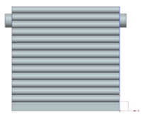
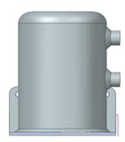
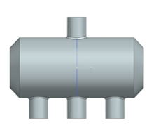
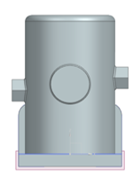

Heat Pumps: What are they and what can they do for you?
Environmental Benefits:
Heat pumps are good for the environment because they don’t burn fuel like oil or gas furnaces. Instead, they move heat around using electricity, which means they produce less pollution and use energy more efficiently. Since heat pumps can use renewable energy like solar or wind to run, they help reduce carbon emissions, which is great for fighting climate change.
Cost-Saving Benefits:
Using a heat pump can save a lot of money. Since they use less electricity than other heating systems, they help reduce your energy bills. Plus, you get both heating and cooling in one system, so you don’t need to buy separate units for your home.
Outdoor Coil
(Condenser in Heating Mode / Evaporator in Cooling Mode):
This is the coil outside the house. In winter, it acts as an evaporator, collecting heat from the outside air, even if it’s cold, and transferring it inside. During summer, it becomes a condenser, releasing the heat it removed from inside the home to the outside air.
Compressor:
The compressor drives the heat pump by pushing refrigerant through the system. It compresses the refrigerant, making it extremely hot and allowing it to transfer heat from one place to another.
Reversing Valve:
This valve is like a switch. It allows the heat pump to work both ways. In the winter, it brings heat into your home, and in the summer, it takes heat out, just like an air conditioner. The mechanism behind this reversing valve can be seen in this image shown above.
Expansion Valve:
After the refrigerant is heated by the compressor, it travels through the expansion valve. Here, the refrigerant expands. This expansion causes the refrigerant to cool significantly so it can absorb more heat.
Indoor Coil:
This is the coil inside the house. In winter, it functions like a condenser, releasing heat that it collected from the outside to warm the house by changing from a gas to a liquid. In summer, it switches roles to act as an evaporator, collecting heat from inside the home to help cool the indoor air by switching from a liquid to a gas.
State Change and Refrigerant:
Heat pumps use refrigerants, which are special fluids that can quickly absorb or release heat by changing their state of matter (Solid, Liquid, Gas). When the refrigerant changes from liquid to gas, it absorbs a significant amount of heat to make that change; when it shifts from gas to liquid, it releases heat. This phase change allows the heat pump to transfer heat effectively, making it possible to warm or cool your home with little wasted energy, even when outside temperatures are extreme.
Heat pump at Five Rivers:
Five rivers has a geothermal heat pump. Instead of pulling heat out of the outside air this heat pump pulls heat out of the ground using long pipes that go straight into the ground beneath you. Geothermal heat pumps are even more efficient than air to air heat pumps but are less common due to their higher initial cost. Below there is a graphic showing air to air heat pumps on the left and geothermal heat pumps on the right.
Drawbacks of Heat Pump Technology:
Heat pump technology while excellent and innovative does still have drawbacks. In extreme heat and extreme cold the efficiency of heat pumps drops considerably. While it is possible to pull heat out of cold air or to push heat into warm air it is not much more efficient than traditional Ac units or boiler units. In practice most heat pumps in cold regions such as NY State need both a heat pump and a furnace heater.